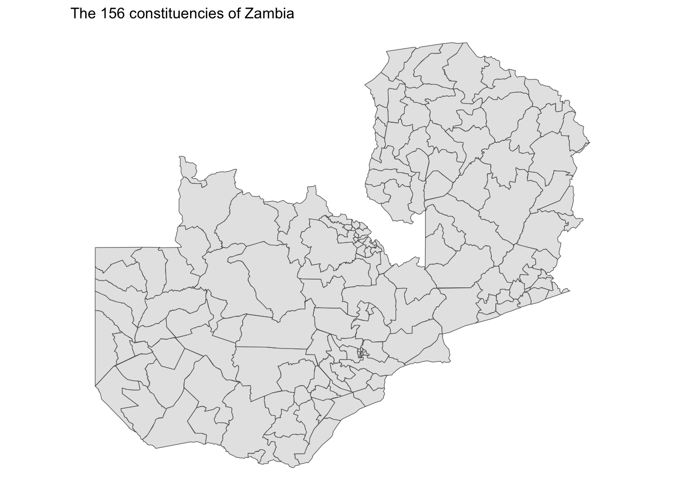
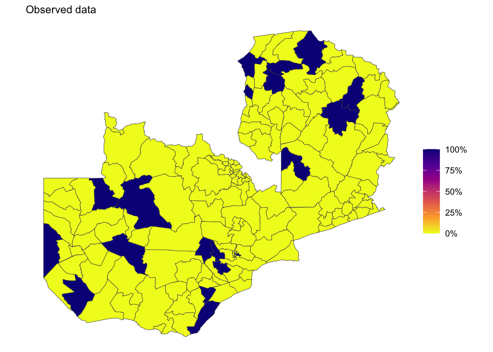
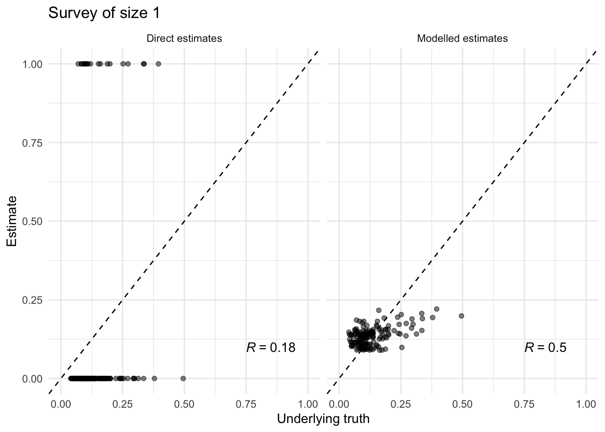

library(INLA)
library(dplyr)
library(ggplot2)
library(patchwork)
library(ggpubr)
set.seed(2)
sf <- sf::st_read("zmb_areas_admin3.geojson")Reading layer `zmb_areas_admin3' from data source
`/Users/adamhowes/Documents/learn/tutorial/inla/zmb_areas_admin3.geojson'
using driver `GeoJSON'
Simple feature collection with 283 features and 10 fields
Geometry type: MULTIPOLYGON
Dimension: XY
Bounding box: xmin: 21.98004 ymin: -18.07828 xmax: 33.71244 ymax: -8.271976
Geodetic CRS: WGS 84sf_constituency_full <- dplyr::filter(sf, area_level == 3)
sf_constituency <- sf::st_simplify(sf_constituency_full, dTolerance = 1000)
ggplot(sf_constituency) +
geom_sf() +
labs(subtitle = paste0("The ", nrow(sf_constituency), " constituencies of Zambia")) +
theme_void()
simulate_icar <- function(W, sd = 1) {
n <- ncol(W)
num <- rowSums(W)
Q <- -W
diag(Q) <- num
Q_aux <- eigen(Q)$vectors[, order(eigen(Q)$values)]
D_aux <- sort(eigen(Q)$values)
rnd <- rnorm(n - 1, 0, sqrt(sd * (1/D_aux[-1])))
rnd <- Q_aux %*% c(0, rnd)
return(as.vector(rnd))
}
nb <- spdep::poly2nb(sf_constituency_full)
W <- spdep::nb2mat(neighbours = nb, style = "B", zero.policy = TRUE)
beta <- -2
u <- simulate_icar(W, sd = 0.5)
eta <- beta + u
rho <- plogis(eta)
sf_constituency$rho <- rho
m <- 1
y <- rbinom(n = nrow(sf_constituency), size = m, prob = rho)
sf_constituency$direct <- y / m
ggplot(sf_constituency, aes(fill = direct)) +
geom_sf(size = 0.1, color = "grey30") +
scale_fill_viridis_c(
option = "C", direction = -1, limits = c(0, 1),
labels = scales::label_percent(1),
) +
labs(fill = "", subtitle = "Observed data") +
theme_void()
fit_model <- function(dat) {
tau_prior <- list(prec = list(prior = "logtnormal", param = c(0, 1/2.5^2), initial = 0, fixed = FALSE))
beta_prior <- list(mean.intercept = -2, prec.intercept = 1)
spdep::nb2INLA("sf.adj", nb)
g <- INLA::inla.read.graph(filename = "sf.adj")
formula <- y ~ 1 + f(id, model = "besag", graph = g, scale.model = TRUE, constr = TRUE, hyper = tau_prior)
fit <- INLA::inla(
formula, family = "binomial", control.family = list(control.link = list(model = "logit")),
control.fixed = beta_prior, data = dat, Ntrials = m, control.predictor = list(compute = TRUE, link = 1),
control.compute = list(dic = TRUE, waic = TRUE, cpo = TRUE, config = TRUE)
)
return(fit)
}
dat <- list(id = 1:nrow(sf_constituency), y = y, m = m)
fit <- fit_model(dat)
sf_constituency$modelled <- fit$summary.fitted.values$mean
sf_constituency |>
sf::st_drop_geometry() |>
dplyr::select(rho, direct, modelled) |>
tidyr::pivot_longer(cols = -rho, names_to = "name", values_to = "value") |>
dplyr::mutate(name = forcats::fct_recode(name, "Direct estimates" = "direct", "Modelled estimates" = "modelled")) |>
ggplot(aes(x = rho, y = value)) +
geom_point(alpha = 0.5) +
facet_grid(~ name) +
geom_abline(slope = 1, intercept = 0, linetype = "dashed") +
stat_cor(aes(label = after_stat(r.label)), method = "pearson", label.x = 0.75, label.y = 0.1) +
labs(x = "Underlying truth", y = "Estimate", title = paste0("Survey of size ", m)) +
lims(x = c(0, 1), y = c(0, 1)) +
theme_minimal()